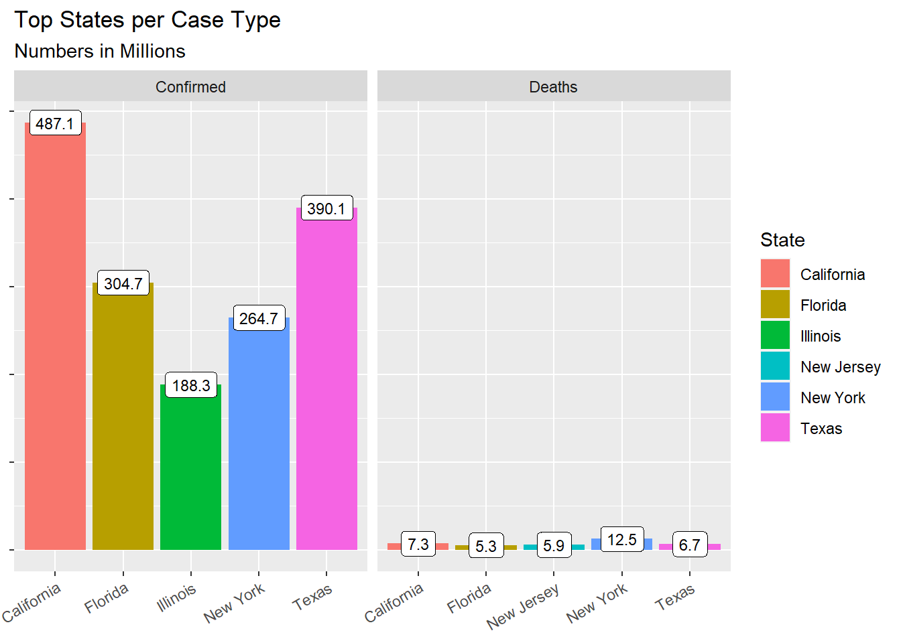
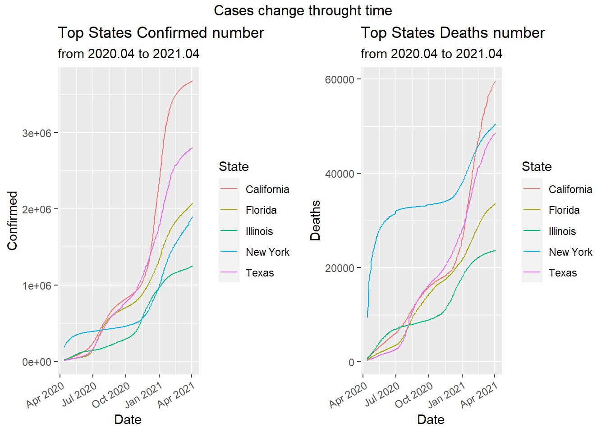
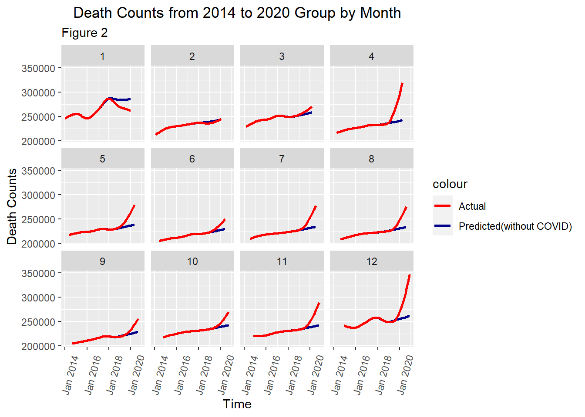
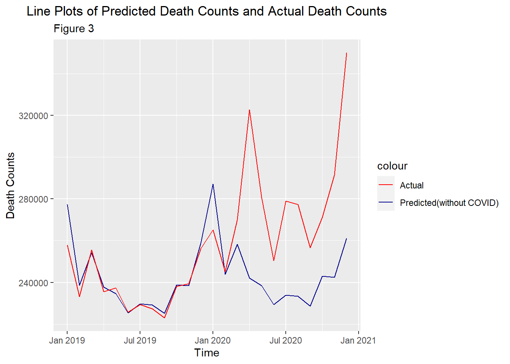

Chapter 5 Results
5.1 belief 1 and 2
5.1.1 Time Series Analysis

Intuitively, death counts per month can be plotted and modeled by time series since data are collected on a monthly basis.
As the time series model is the foundation of our project, we would use it to predict death counts if there were pandemic (what would the data look like in a normal year). The predictions give us the baseline to compare with. Therefore, we want the predictions to be accurate and our model to be statistically reasonable. Therefore, we would analyze the time series model using some graphs.

Firstly, we want to check if the assumptions of stationarity and seasonality for time series hold.
The decomposition of the time series plot shows trend, seasonal effects and white noise (randomness). As evident from the decomposition, the data exhibit: 1.Strong seasonality with almost constant seasonal effects on a period of 12. Logically, the constant seasonal effect also makes sense, suggesting that more people die in winter perhaps because of winter flu and temperature. 2.Trend is generally increasing with a few exceptions at 2015.6 and 2018.6. The trend agrees with what we have discovered in the introduction: death counts/rate is increasing in the past decade. 3.There is no clusters or patterns. White noise is randomly distributed with a mean of 0.
Stationarity and seasonality hold. Time series plot seems like a good approach and from here we develop some intuition that when comparing death counts, we we should take into account that there are more deaths in winter than in summer.
##
## ARIMA(2,0,2)(1,1,1)[12] with drift : Inf
## ARIMA(0,0,0)(0,1,0)[12] with drift : 992.9256
## ARIMA(1,0,0)(1,1,0)[12] with drift : 975.9687
## ARIMA(0,0,1)(0,1,1)[12] with drift : Inf
## ARIMA(0,0,0)(0,1,0)[12] : 1006.234
## ARIMA(1,0,0)(0,1,0)[12] with drift : 978.972
## ARIMA(1,0,0)(1,1,1)[12] with drift : Inf
## ARIMA(1,0,0)(0,1,1)[12] with drift : Inf
## ARIMA(0,0,0)(1,1,0)[12] with drift : 986.8855
## ARIMA(2,0,0)(1,1,0)[12] with drift : 977.8282
## ARIMA(1,0,1)(1,1,0)[12] with drift : Inf
## ARIMA(0,0,1)(1,1,0)[12] with drift : 976.5776
## ARIMA(2,0,1)(1,1,0)[12] with drift : 980.3347
## ARIMA(1,0,0)(1,1,0)[12] : 979.3249
##
## Best model: ARIMA(1,0,0)(1,1,0)[12] with drift## [1] TRUE## Series: tsData
## ARIMA(1,0,0)(1,1,0)[12] with drift
##
## Coefficients:
## ar1 sar1 drift
## 0.5195 -0.3903 361.1227
## s.e. 0.1325 0.1546 106.1293
##
## sigma^2 estimated as 33457901: log likelihood=-483.52
## AIC=975.04 AICc=975.97 BIC=982.52
The automatically generated model is ARIMA(1,0,0)(1,1,0)[12]. The ACF and PACF plots agree with that model and therefore we will be using this simple model to predict what would death counts look like if there were no pandemic

Visually, the predicted data and the actual data look consistent. The predictions capture model trend and seasonality.
5.1.2 Comparison and Analysis
The dark blue line is a predicted line which simulates the death counts if there were no pandemic. We have predicted 2019 death counts to see if the pandemic had started before 2020 under the under cover of winter flu. Logically, the earlier in 2019, the less likely the pandemic had started. Therefore, the early data in 2019 could also serve as a validation set. Before Nov 2019, the two graphs are similar in terms of shape and values. This reassures that the fitted model is accurate. Based on this plot, we have three observations: 1. Predictions always overestimated death counts before Nov 2019. The actual death counts surpassed prediction in Nov 2019 and the number kept increasing until May 2020 while it was expected to drop according to predictions. It seems the actual line has deviated from predictions since Nov 2019, which supports our first belief that the pandemic had started before 2020. 2. The increasing trend in actual death counts was flattened in Jun and Jul 2020. It seems that pandemic became not as killing in summer. Yet, the difference between the two curves were still increasing and we should also remember that death counts is generally expected to be lower in summer. Therefore, we should take this into account and plot more graphs. 3. The death counts rise again after July 2020.
We cannot conclude for the second belief. In order to further investigate our 2nd and 3rd observations made above, we use another graph to take a closer look at our data by month.

This plot groups data by month, that is plotting 12 graphs according to 12 months. This removes month-induced effects. Based on figure 2, we have another 3 observations: 1. The death counts in Feb and Mar 2020 were actually the same as predicted values. More importantly, we actual death counts in Jan 2020 is much less than the predicted. This not only rejects the first belief, but also conflicts with figure 1 which shows that death counts in Jan, Feb and Mar 2020 were more than the predicted. 2. From May - Oct 2020, the death counts were greater than the predicted. However, the gradient of the red curve or differences between the two curves are less. 3. Death counts surge again after Oct 2020.
Therefore, we could almost conclude that the pandemic was not as killing in summer and only in summer. As for the conflicts we found in the first observation, we will investigate that using another plot.

This plots the raw data without any smoothing. Clearly, actual death counts were always less than the predicted before March 2020. Figure 1 gives us the illusion that actual death counts surpassed the predicted since Nov 2019 as the actual data in Nov 2019, Dec 2019, Jan 2020, Feb 2020 and Mar 2020 were pulled by the very big number in April 2020 in smoothing. Therefore, the pandemic did not start before 2020. Based on only data and plots, its started after Mar 2020 which agrees with official records. The first belief is not true.